Pick the moment
Set breakfast, lunch, or dinner; dine out or delivery; and light, normal, or hearty.
On-device menu ideas
Choose your meal time, dining style, and appetite. Menu Suggestion AI turns that context into a practical menu idea, a reason, and a small enjoyment tip.
The main screen keeps the first choice simple. More Filters is there when you want to narrow a cuisine, spice level, or exclusion.
Set breakfast, lunch, or dinner; dine out or delivery; and light, normal, or hearty.
Refine spice, cuisine, and exclusions without crowding the main screen.
Get one menu, a concise reason, a way to enjoy it, and two alternatives.
Core menu generation, preferences, Favorites, and history stay on your device. Weather and maps use the network only for those optional features.
After you choose Find nearby restaurants, Apple Maps searches for real places. You can open a result in Apple Maps or Google Maps. The app does not invent businesses or routes.
These are real SwiftUI states captured from the app’s deterministic release-image fixture. No personal location or raw model response is shown.
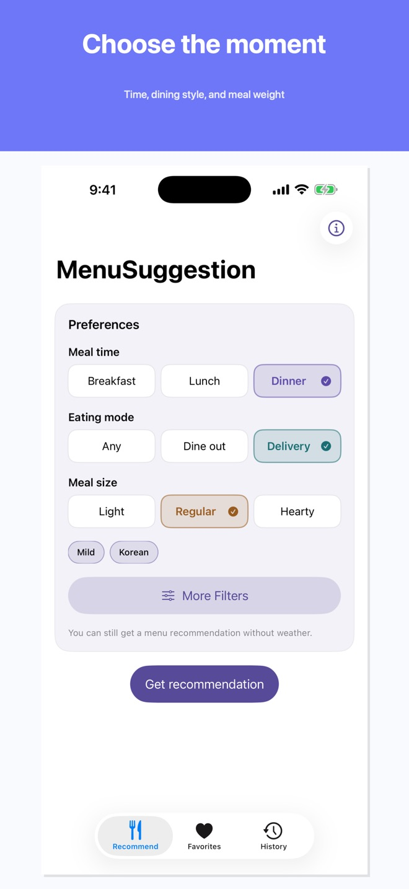
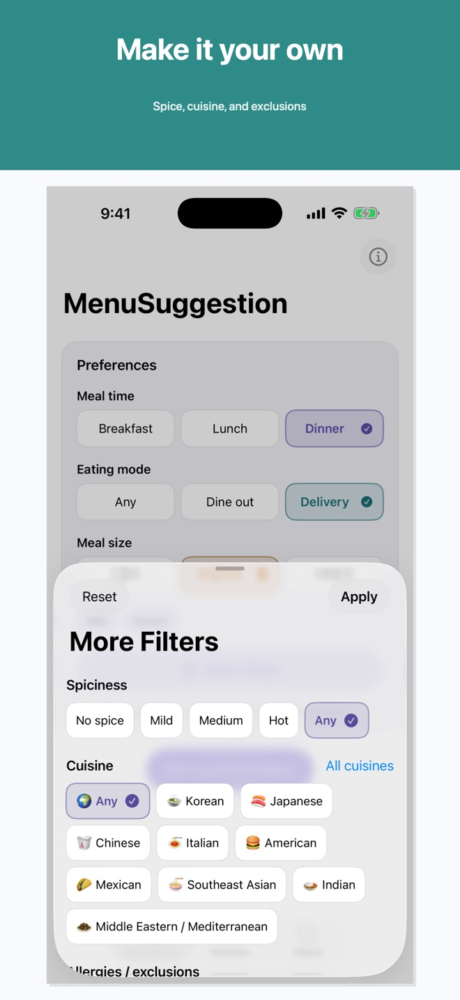
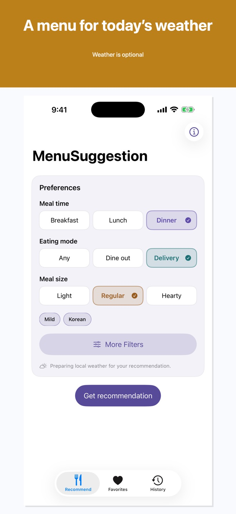
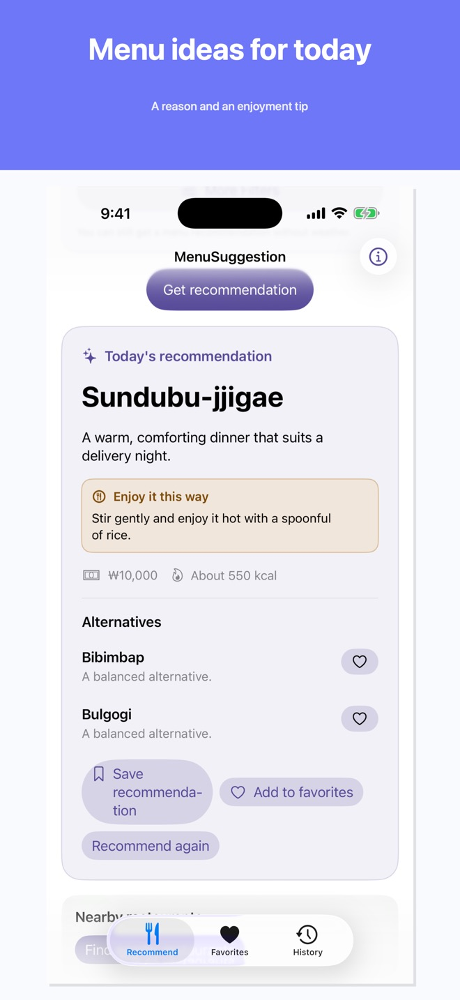
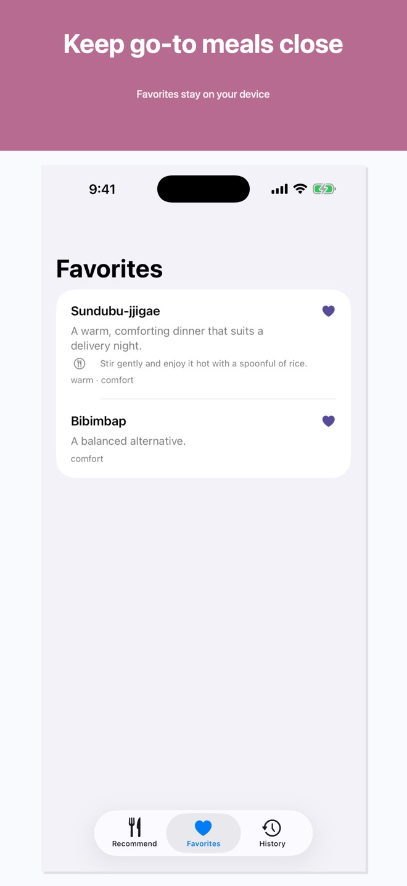
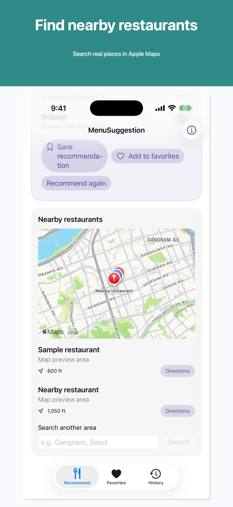
기기 내 메뉴 추천
식사 시간, 식사 방식, 식사량을 고르면 Menu Suggestion AI가 실용적인 메뉴와 이유, 맛있게 먹는 작은 팁을 제안합니다.
메인 화면은 첫 선택을 단순하게 유지합니다. 음식 종류, 맵기, 제외 음식을 좁히려면 More Filters를 사용합니다.
아침, 점심, 저녁; 외식 또는 배달; 가볍게, 보통, 든든하게를 고릅니다.
메인 화면을 복잡하게 만들지 않고 맵기, 음식 종류, 제외 음식을 조정합니다.
대표 메뉴, 짧은 이유, 맛있게 먹는 방법, 대체 메뉴 두 가지를 보여줍니다.
핵심 메뉴 생성, 선호, 즐겨찾기, 기록은 기기에 남습니다. 날씨와 지도는 해당 선택 기능에서만 네트워크를 사용합니다.
주변 식당 찾기를 선택한 뒤 Apple Maps가 실제 장소를 검색합니다. 결과는 Apple Maps 또는 Google Maps에서 열 수 있습니다. 앱은 식당이나 경로를 만들어 내지 않습니다.
실제 SwiftUI 화면을 deterministic release-image fixture로 캡처했습니다. 개인 위치나 원문 모델 응답은 보여주지 않습니다.
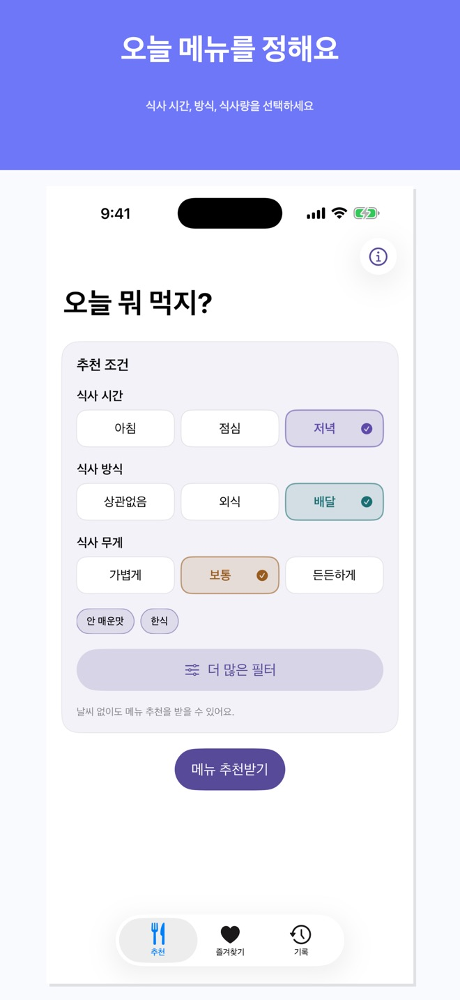
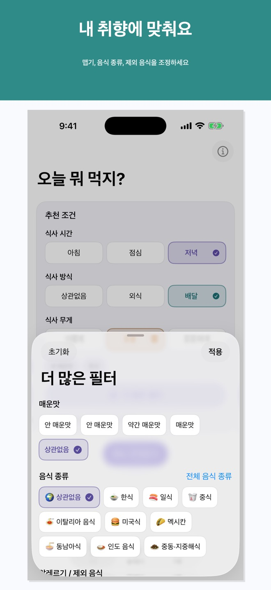
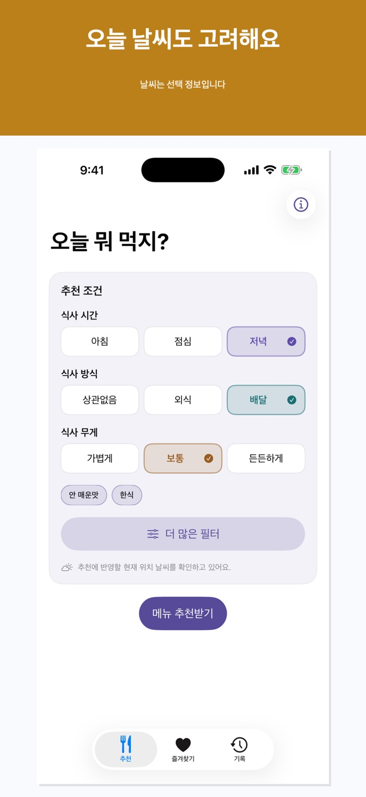
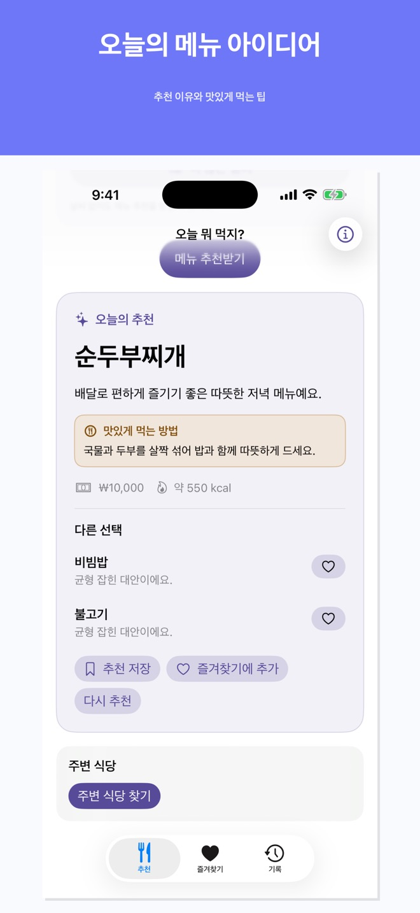
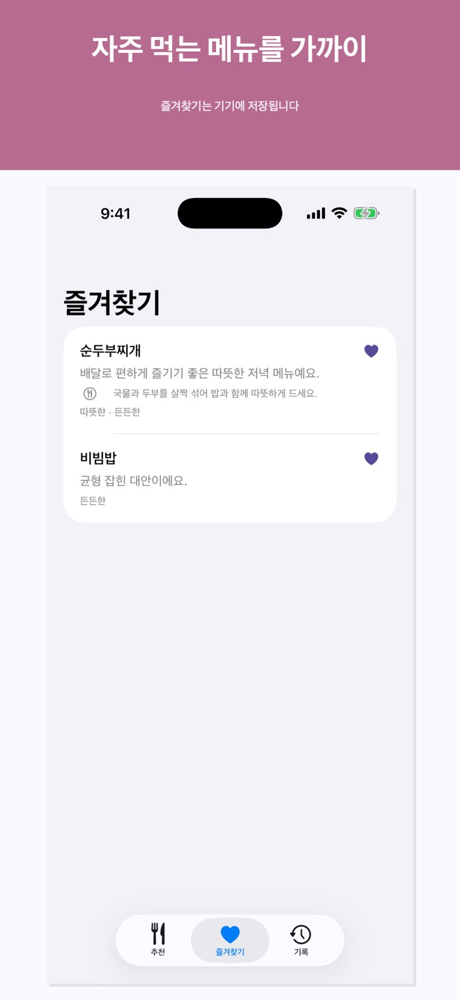
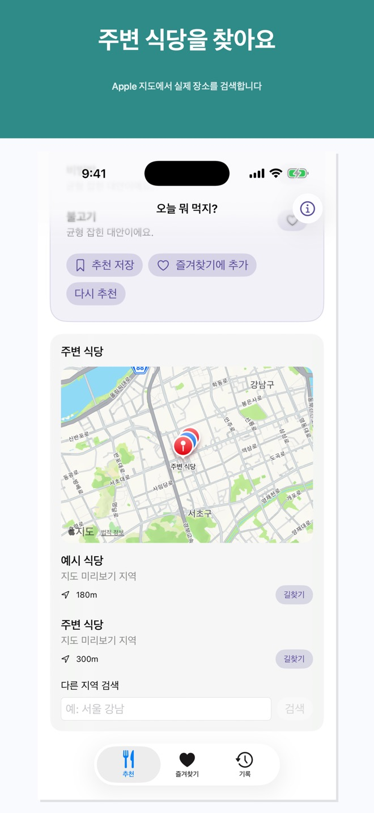